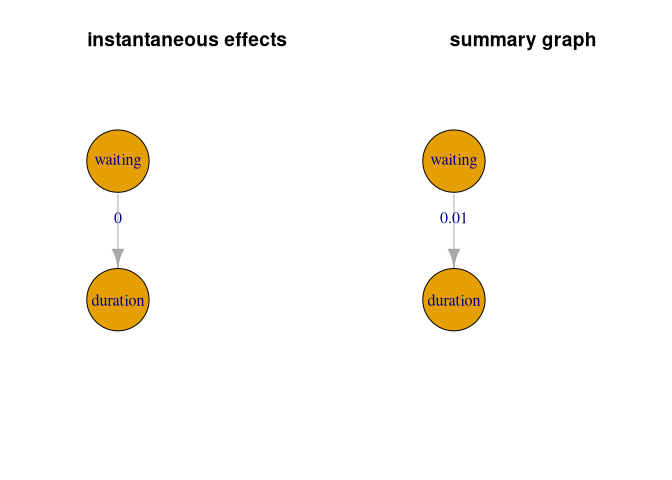

Ancestor Regression (AncReg) is a package with methods to test for ancestral connections in linear structural equation models (Christoph Schultheiss, Ulmer, and Bühlmann (2024)) and structural vector autoregressive models (C. Schultheiss and Bühlmann (2023)). Ancestor Regression provides explicit error control for false causal discovery, at least asymptotically. To have power, however, it relies on non-Gaussian distributions.
Installation
To install the Ancestor Regression R package from CRAN, just run
install.packages(AncReg)You can install the development version of AncReg from GitHub with:
# install.packages("devtools")
devtools::install_github("markusul/AncReg")or
# install.packages('pak')
pak::pkg_install('markusul/AncReg')linear structural equation models
This is a basic example on how to use Ancestor Regression using some simulated data.
library(AncReg)
# random DAGS for simulation
set.seed(42)
p <- 5 #number of nodes
DAG <- pcalg::randomDAG(p, prob = 0.5)
B <- matrix(0, p, p) # represent DAG as matrix
for (i in 2:p){
for(j in 1:(i-1)){
# store edge weights
B[i,j] <- max(0, DAG@edgeData@data[[paste(j,"|",i, sep="")]]$weight)
}
}
colnames(B) <- rownames(B) <- LETTERS[1:p]
# solution in terms of noise
Bprime <- MASS::ginv(diag(p) - B)
n <- 5000
N <- matrix(rexp(n * p), ncol = p)
X <- t(Bprime %*% t(N))
colnames(X) <- LETTERS[1:p]
# fit Ancestor Regression
fit <- AncReg(X)
#> Registered S3 method overwritten by 'quantmod':
#> method from
#> as.zoo.data.frame zoo
#> Registered S3 methods overwritten by 'tsutils':
#> method from
#> print.nemenyi greybox
#> summary.nemenyi greybox
fit
#> $z.val
#> A.0 B.0 C.0 D.0 E.0
#> A 48.7380204 0.2228364 -0.8016602 0.5490716 -0.4341680
#> B -5.3286343 59.1036440 -1.2511824 -1.2682775 0.4165155
#> C -4.5000966 -8.4766371 53.2254962 0.1683882 1.9111938
#> D -5.0924716 -0.8902521 -1.0268923 75.1415659 0.8641796
#> E -0.2529153 -3.8052342 -1.0547642 1.8153614 61.9014974
#>
#> $p.val
#> A.0 B.0 C.0 D.0 E.0
#> A 0.000000e+00 8.236628e-01 0.4227496 0.58295633 0.66416645
#> B 9.895400e-08 0.000000e+00 0.2108679 0.20469888 0.67703283
#> C 6.792260e-06 2.317966e-17 0.0000000 0.86627792 0.05597968
#> D 3.534257e-07 3.733305e-01 0.3044712 0.00000000 0.38748922
#> E 8.003337e-01 1.416701e-04 0.2915332 0.06946839 0.00000000
#>
#> attr(,"class")
#> [1] "AncReg"The summary function can be used to collect and organize the p-values. Additionally it returns estimated ancestral graphs.
# collect ancestral p-values and graph
res <- summary(fit)
res
#> $p.val
#> A B C D E
#> A 1.000000e+00 8.236628e-01 0.4227496 0.58295633 0.66416645
#> B 9.895400e-08 1.000000e+00 0.2108679 0.20469888 0.67703283
#> C 6.792260e-06 2.317966e-17 1.0000000 0.86627792 0.05597968
#> D 3.534257e-07 3.733305e-01 0.3044712 1.00000000 0.38748922
#> E 8.003337e-01 1.416701e-04 0.2915332 0.06946839 1.00000000
#>
#> $graph
#> A B C D E
#> A FALSE FALSE FALSE FALSE FALSE
#> B TRUE FALSE FALSE FALSE FALSE
#> C TRUE TRUE FALSE FALSE FALSE
#> D TRUE FALSE FALSE FALSE FALSE
#> E TRUE TRUE FALSE FALSE FALSE
#>
#> $alpha
#> [1] 0.05
#>
#> attr(,"class")
#> [1] "summary.AncReg"As we know the truth in the simulated model, we can compare the estimated ancestral graph with the true one.
#compare true and estimated ancestral graph
trueGraph <- igraph::graph_from_adjacency_matrix(recAncestor(B != 0))
ancGraph <- igraph::graph_from_adjacency_matrix(res$graph)
par(mfrow = c(1, 2))
plot(trueGraph, main = 'true ancestral graph', vertex.size = 30)
plot(ancGraph, main = 'Ancestor Regression', vertex.size = 30)
structural vector autoregressive models
We show an example of a SVAR application using the time series of geyser eruptions. (C. Schultheiss and Bühlmann (2023))
geyser <- MASS::geyser
# shift waiting such that it is waiting after erruption
geyser2 <- data.frame(waiting = geyser$waiting[-1], duration = geyser$duration[-nrow(geyser)])
# fit ancestor regression with 6 lags considered
fit2 <- AncReg(as.matrix(geyser2), degree = 6)
res2 <- summary(fit2)
res2
#> $inst.p.val
#> waiting duration
#> waiting 1.0000000 0.0004811719
#> duration 0.5109396 1.0000000000
#>
#> $inst.graph
#> waiting duration
#> waiting FALSE TRUE
#> duration FALSE FALSE
#>
#> $inst.alpha
#> [1] 0.05
#>
#> $sum.p.val
#> waiting duration
#> waiting 1.0000000 0.008733271
#> duration 0.1760936 1.000000000
#>
#> $sum.graph
#> waiting duration
#> waiting FALSE TRUE
#> duration FALSE FALSE
#>
#> attr(,"class")
#> [1] "summary.AncReg"
par(mfrow = c(1, 2))
# visualize instantaneous ancestry
instGraph <- igraph::graph_from_adjacency_matrix(res2$inst.graph)
plot(instGraph, edge.label = round(diag(res2$inst.p.val[1:2, 2:1]), 2),
main = 'instantaneous effects', vertex.size = 90)
# visualize summary of lagged ancestry
sumGraph <- igraph::graph_from_adjacency_matrix(res2$sum.graph)
plot(sumGraph, edge.label = round(diag(res2$sum.p.val[1:2, 2:1]), 2),
main = 'summary graph', vertex.size = 90)